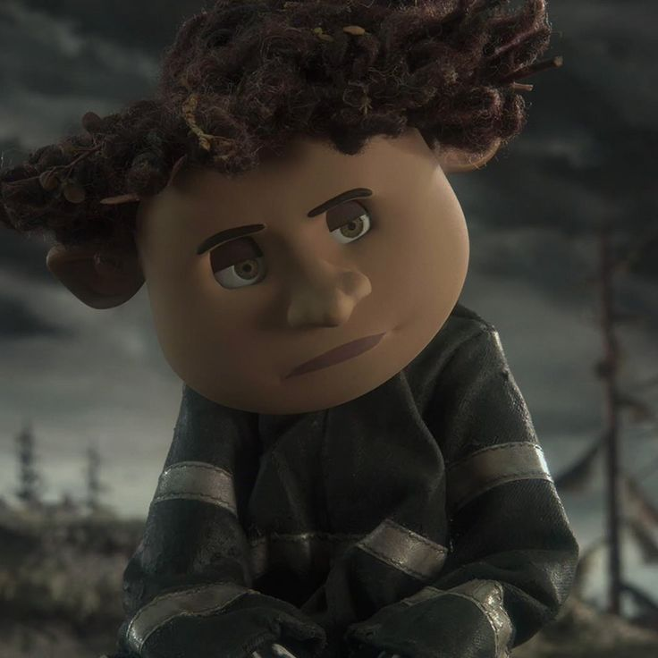
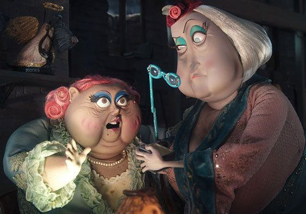

Reparto y equipo
Más de 500 personas trabajaron en Coraline. Desde artistas escénicos hasta pintores de marionetas y reparto de voces.
Coraline Jones

Dakota Fanning: reconocida actriz infantil y juvenil. Presta su voz a Coraline, una niña curiosa, aventurera y algo descuidada por sus padres, quien al mudarse al Palacio Rosa descubre un mundo paralelo que parece perfecto, pero oculta un oscuro peligro.
Otra madre y Mel Jones


Teri Hatcher: actriz famosa por sus papeles en Desperate Housewives y Lois & Clark. Interpreta un doble rol: la madre real de Coraline, una mujer estresada y distante por su trabajo, y la "Otra Madre" (La Beldam), una malvada criatura que adopta una fachada perfecta e idílica para atrapar el alma de la niña.
Wyborne "Wybie"

Robert Bailey Jr.: actor de televisión y cine (The Night Shift). Da vida al excéntrico y parlanchín vecino de Coraline, un personaje creado especialmente para la película que actúa como aliado indispensable para ayudarla a escapar del Otro Mundo.
El Gato

Keith David: prolífico actor de voz y cine con un registro grave característico (The Princess and the Frog, Platoon). Vocaliza al sarcástico gato negro que puede hablar en el Otro Mundo; sirve como guía clave, protector y confidente de Coraline.
Otro Padre y Charlie Jones


John Hodgman: actor, humorista y escritor estadounidense. Interpreta al distraído y ocupado padre real de Coraline, así como a su contraparte en el Otro Mundo, un robot/creación marioneta de la Beldam que intenta advertir a la niña de los planes de su creadora.
Señor Bobinsky

Ian McShane: actor británico de gran trayectoria (Deadwood, John Wick). Presta su voz al extravagante vecino ruso de Coraline, un ex-acróbata que afirma entrenar a un circo de ratones saltarines y que intenta advertirle a Coraline sobre el peligro inminente.
Señoritas April Spink y Miriam Forcible

- Jennifer Saunders: renombrada comediante y actriz británica (Absolutely Fabulous). Da vida a una de las dos viejas actrices de teatro retiradas que viven en el sótano y que le entregan a Coraline la piedra con el agujero para encontrar los ojos de los niños fantasma.
- Dawn French: famosa actriz y comediante británica (The Vicar of Dibley). Interpreta a la eterna compañera de escenario de la Srta. Spink; junto a ella realiza un espectáculo teatral surrealista en el Otro Mundo.